측량및지형공간정보기사 (2016-05-08 기출문제)
1과목: 측지학 및 위성측위시스템
1. 측지학에서 사용하는 투영에 대한 설명으로 옳은 것은?
- 동서보다 남북이 긴 지역에는 원뿔투영을 사용한다.
- 대축척 지형도 제작에는 주로 등각투영을 사용한다.
- 투영에 의해 표현된 평면은 구면의 왜곡이 완전히 소거되어 나타낸 것이다.
- 투영면 상의 거리는 실제 거리와 일치한다.
(정답률: 66%)

2. GNSS로부터 획득할 수 있는 정보와 가장 거리가 먼 것은?
- 공간상 한 점의 위치
- 지각의 변동
- 해수면의 온도
- 정확한 시간
(정답률: 78%)
3. 기준국과 이동국간의 거리가 짧을 경우 상대측위를 수행하면 절대측위에 비해 정확도가 현격히 향상되는 이유로 거리가 먼 것은?
- 위성궤도오차가 제거된다.
- 다중경로오차(multipath)가 제거된다.
- 전리층에 의한 신호지연효과가 제거된다.
- 위성시계오차가 제거된다.
(정답률: 60%)
4. 고정점으로부터 50km 떨어져 있는 미지점의 좌표를 GNSS 관측으로 결정하려고 한다. 다음 중 가장 우수한 결과를 확보할 수 있는 조건은?
- 고정국 및 미지점에 각각 1주파용 수신기 및 안테나로 관측하고 위성궤도력은 보통력을 사용한다.
- 고정국 및 미지점에 각각 2주파용 수신기 및 안테나로 관측하고 위성궤도력은 정밀력을 사용한다.
- 고정국 및 미지점에 각각 2주파용 수신기 및 안테나로 관측하고 위성궤도력은 방송력을 사용한다.
- 고정국은 2주파용 수신기 및 안테나, 미지점은 1주파용 수신기 및 안테나로 관측하며 위성궤도력은 정밀력을 사용한다.
(정답률: 63%)
5. 중력이상의 주된 원인에 대한 설명으로 옳은 것은?
- 지하에 물질밀도가 고르게 분포되어 있지 않다.
- 대기의 분포가 수시로 변화되고 있다.
- 태양과 달의 인력이 작용한다.
- 화산의 폭발이 있다.
(정답률: 76%)
6. GPS는 원래 군에서 사용할 목적으로 개발되었다. 이에 따라 일반인들이 정확한 신호를 얻지 못하도록 원래 신호를 암호화하여 전송하게 되는데 이것을 무엇이라고 하는가?
- 시계 오차
- 궤도 오차
- AS(Anti-Spoofing)
- SA(Selective Availability)
(정답률: 63%)
7. WGS84에 대한 설명으로 옳은 것은?
- WGS84 좌표계의 원점은 3축 방향에 대하여 각각 ±40~50m의 변이량이 있다.
- 좌표계의 원점은 지구의 질량 중심이 된다.
- NSWC(Naval Surface Warfare Center) 9Z-2좌표계의 원점을 2km 아래로 평행 이동하여 설정하였다.
- WGS84좌표계는 SLR측위방법에 의해 설정되었다.
(정답률: 65%)
8. 구면삼각형에 관한 설명으로 옳지 않은 것은?
- 구면삼각형은 지표상 세 점을 지나는 세 개의 대원을 세 변으로 하는 삼각형이다.
- 구면삼각형에서는 내각의 합이 180°보다 크다.
- 구면삼각형의 계산에 르장드르(Legendre)의 정리가 널리 사용된다.
- 평면삼각측량에서도 구과량은 무시할 수 없으므로 구면삼각형의 면적 대신 평면 삼각형의 면적을 사용해서는 안 된다.
(정답률: 74%)
9. GPS 위성의 궤도정보와 관계가 먼 것은?
- 알마낙(Almanac)
- IGS의 정밀궤도력
- 방송궤도력(Broadcast ephemerides)
- IONEX(The IONosphere map EXchange)정보
(정답률: 65%)
10. 거리 측정의 정밀도를 1/108까지 허용한다면 지구의 표면을 평면으로 생각할 수 있는 측정거리의 한계는? (단, 지구의 곡률반지름은 6370km로 한다.)
- 약 22km
- 약 11km
- 약 7km
- 약 2km
(정답률: 52%)
11. GPS의 오차요인 중에서 DGPS기법으로 상쇄되는 오차가 아닌 것은?
- 위성의 궤도 정보 오차
- 전리층에 의한 신호지연
- 대류권에 의한 신호지연
- 전파의 혼신
(정답률: 65%)
12. GNSS 측량 시 고려해야 할 사항에 대한 설명으로 옳지 않은 것은?
- 3차원 위치결정을 위해서는 4개 이상의 위성신호를 관측하여야 한다.
- 임계 고도각(앙각)은 15° 이상을 유지하는 것이 좋다.
- DOP 값이 3 이하인 경우는 관측을 하지 않는 것이 좋다.
- 철탑이나 대형 구조물, 고압선의 아래 지점에서는 관측을 피하여야 한다.
(정답률: 72%)
13. 어떤 지점에서 GNSS 측량을 실시한 결과 타원체고가 153.8m, 정표고가 53.7m이었다면 이 지점의 지오이드고는?
- 100.1m
- 160.2m
- 207.5m
- 241.3m
(정답률: 72%)
14. 적위와 적경에 대한 설명으로 틀린 것은?
- 적경은 추분점을 기준으로 시계방향으로 잰 각을 의미한다.
- 적경이 작은 별이 먼저 뜨고 진다.
- 위도 φ인 지방의 천정의 적위는 φ이다.
- 적위는 자오면 상에서 천구의 적도로부터 북쪽 또는 남쪽으로 잰 각을 의미한다.
(정답률: 49%)
15. 깊은 곳의 광물탐사를 하기 위한 탄성파 측정 방법은?
- 굴절법
- 굴착법
- 충격법
- 반사법
(정답률: 77%)
16. 삼각망을 구성하는 데 있어 기준이 되는 지구의 형상은?
- 수준면이 연장된 평면
- 준거(기준)타원체
- 지오이드
- 기준 구
(정답률: 59%)
17. 다음 중 지자기를 나타내는 단위는?
- mGal
- Gauss
- Newton
- Watt
(정답률: 70%)
18. 중력의 보정에 속하지 않는 것은?
- 고도보정
- 부게보정
- 지형보정
- 연직각보정
(정답률: 65%)
19. GNSS 반송파 상대측위 기법에 대한 설명 중 옳지 않은 것은?
- 전파의 위상차를 관측하는 방식으로서 정밀측량에 주로 사용된다.
- 오차 보정을 위하여 단일차분, 이중차분, 삼중차분의 기법을 적용할 수 있다.
- 기준국없이 수신기 1대를 사용하여 모호 정수를 구한 뒤 측위를 실시한다.
- 위성과 수신기간 전파의 파장 개수를 측정하여 거리를 계산한다.
(정답률: 67%)
20. 평면직교좌표의 원점에서 동쪽에 있는 A점에서 B점방향의 자북방위각을 관측한 결과 89° 10′ 25″이었다. A점에서의 자침편차가 5°W일 때 진북방위각은?
- 84° 10′ 25″
- 89° ⑤′ 25″
- 89° 30′ 25″
- 94° 10′ 25″
(정답률: 63%)
2과목: 응용측량
21. 고속도로에 일반적으로 많이 쓰이는 완화곡선은?
- 3차 포물선
- 렘니스케이트곡선
- 3차 나선
- 클로소이드곡선
(정답률: 67%)
22. 그림과 같이 어느 지역에 대한 표고를 관측하였다. 이 지역의 계획고를 10.00m로 하기 위한 토량은? (단, 각 사각형의 면적=500.00m2, 단위：m)
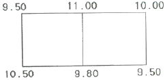
- 절토량 137.50m3
- 성토량 137.50m3
- 절토량 210.00m3
- 성토량 210.00m3
(정답률: 44%)
23. 그림과 같이 R=200m, I=100°인 원곡선의 곡선시점 A와 교각의 크기(I)를 유지한 상태에서 교점(P′)을 접선 AP를 따라 20m 이동하여 노선을 변경하고자 할 때, 새로운 원곡선의 반지름 R′은?
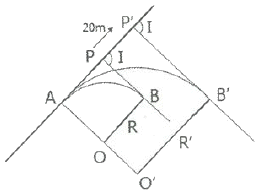
- 216.78m
- 220.00m
- 226.11m
- 231.11m
(정답률: 53%)
24. 그림과 같은 토지의 단면적(A)을 구하는 식으로 옳은 것은?
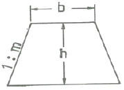
- A=(b+mh)h
- A=(b+m)h
- A=1/2(b+mh)h
- A=1/2(b+2mh)h
(정답률: 56%)
25. 지구중심을 향한 깊이 800m의 두 수직 터널에 대하여 두 수직 터널 간 지표면에서의 거리가600m라 하면 지하 800m에서의 거리는? (단, 지구의 반지름=6370km)
- 599.246m
- 599.925m
- 599.993m
- 600.075m
(정답률: 49%)
26. 하천의 수애선에 대한 설명으로 옳지 않은 것은?
- 수애선은 수면과 하안과의 경계선이다.
- 수애선은 하천수위의 변화에 따라 변동한다.
- 수애선은 평균수위(Mean Water Level)에 의해 결정된다.
- 수애선은 동시관측에 의한 방법과 심천측량에 의한 방법으로 측량할 수 있다.
(정답률: 60%)
27. 부자에 의해 유속을 측정할 경우 유하거리에 ±0.1m 오차와 관측시간에 ±0.5초(s)의 오차가 허용된다면 관측유속이 1m/s인 경우 오차를 2% 이하로 하기 위한 최소 유하거리는?
- 10.5m
- 20.0m
- 25.5m
- 30.0m
(정답률: 36%)
28. 그림에서 V지점에 해당하는 종단곡선(Vertical curve) 상의 계획고(Elevation)는? (단, 종단곡선은 2차포물선이고, A점의 계획고=65.50m)
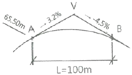
- 66.14m
- 66.57m
- 66.83m
- 67.49m
(정답률: 40%)
29. 건설하고자 하는 구조물이 축척 1:1000의 도면에서 면적이 40cm2이면 실제 면적은?
- 5000m2
- 4000m2
- 3000m2
- 2000m2
(정답률: 63%)
30. 터널 내의 고저차 측량에서 두 측점이 천장에 설치되어 있을 때 아래와 같은 결과를 얻었다. 두 점 간의 고저차는?
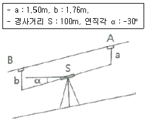
- 46.22m
- 49.74m
- 50.26m
- 52.74m
(정답률: 46%)
31. 클로소이드곡선의 매개 변수 A가 100m, 곡선의 반지름 R이 200m일 때 완화곡선의 길이 L는?
- 40m
- 50m
- 100m
- 200m
(정답률: 62%)
32. 수심이 h인 하천의 평균 유속을 구하기 위하여 수면으로부터 0.2h, 0.6h, 0.8h 지점의 유속을 관측한 결과로 0.88m/s, 0.62m/s, 0.43m/s를 얻었다면 3점법에 의한 평균 유속은?
- 0.632m/s
- 0.638m/s
- 0.643m/s
- 0.655m/s
(정답률: 64%)
33. 터널 내에서 50m 떨어진 두 점의 수평각을 관측하였더니 시준선에 직각으로 4mm의 시준오차가 발생하였다면 수평각의 오차는?
- 26″
- 22.5″
- 19″
- 16.5″
(정답률: 49%)
34. 캔트(cant)에 대한 설명으로 옳은 것은?
- 직선과 곡선의 연결부분을 의미한다.
- 토량을 계산하는 방법의 일종이다.
- 곡선부의 안쪽과 바깥쪽의 높이 차이다.
- 완화곡선의 일종이다.
(정답률: 55%)
35. 노선의 종단경사가 급격히 변하는 곳에서 차량의 충격을 제거하고 시야를 확보하기 위하여 설치하는 것은?
- 수평곡선
- 캔트
- 종단곡선
- 슬랙
(정답률: 44%)
36. 음향측심기를 이용하여 수심을 측정하였을 경우 수심측정값으로 옳은 것은? (단, 수중음속1510m/s, 음파송수신시간 0.2초)
- 150m
- 151m
- 300m
- 302m
(정답률: 53%)
37. 지하시설물의 유지관리에 대한 설명으로 옳지 않은 것은?
- 자료구축 이후 지속적이며 표준화된 갱신이 이루어져야 한다.
- 지하시설물의 특성에 따른 모니터링 체계를 통합하는 것이 효율적이다.
- 일관성 있고 체계적인 자료의 유지관리가 이루어져야 한다.
- 보안을 위하여 분산적인 자료 관리를 할 수 있도록 독립적 자료 관리 시스템을 구축하는 것이 바람직하다.
(정답률: 71%)
38. 아래 표는 어느 노선의 구간별 토량계산 결과이다. 구간 4까지의 누가토량은?
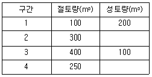
- 750m3
- 1⑤0m3
- 1350m3
- 1400m3
(정답률: 60%)
39. 단곡선 설치 시 곡선반지름 R=350m, 교각 I=70°일 때 접선길이(T.L)는?
- 275.7m
- 265.1m
- 250.7m
- 245.1m
(정답률: 57%)
40. 수위 관측소 설치 시 고려사항으로 틀린 것은?
- 상하류 약 100m 정도의 직선이며, 유속변화가 적은 곳
- 홍수 때 관측소가 유실, 이동, 파손될 염려가 없는 곳
- 수위표를 쉽게 읽을 수 있는 곳
- 합류점, 분기점과 같이 수위의 변화가 뚜렷하게 생기는 곳
(정답률: 71%)
3과목: 사진측량 및 원격탐사
41. 영상을 모자이크할 경우에 모자이크된 영상 내에서 경계선이 보이게 된다. 이 경계선을 중심으로 일정한 폭을 설정하여 영상을 부드럽게 처리할 수 있는 방법은?
- 영상 와핑(image warping)
- 영상 페더링(image feathering)
- 영상 스트레칭(image stretching)
- 히스토그램 평활화(histogram equalization)
(정답률: 52%)
42. 공간해상도가 높은 흑백영상과 공간해상도가 낮은 칼라(다중분광)영상을 합성하여 공간해상도가 높은 칼라영상을 만드는 데 사용하는 영상처리방법은?
- Fourier 변환
- 영상융합(Image Fusion) 또는 해상도 융합(Resolution Merge)
- NDVI(Normalized Difference Vegetation Index) 변환
- 공간 필터링(Spatial Filtering)
(정답률: 60%)
43. 촬영계획에 관한 설명으로 틀린 것은?
- 종중복도는 보통 60% 정도로 하며 목적은 입체시에 있다.
- 횡중복도는 스트립간의 접합을 목적으로 하며 보통 30% 정도로 한다.
- 지상의 기복이 촬영고도의 10% 이상인 지역에서는 중복도를 증가시킨다.
- 촬영방향은 보통 남북방향으로 하는 것이 좋다.
(정답률: 55%)
44. 정확하게 분별할 수 있는 자연점이 없는 지역에서 연속으로 사진을 결합시킬 경우에 표정점 등의 위치를 인접 사진에 옮긴 점을 무엇이라 하는가?
- 자침점
- 부점
- 접합점
- 주점
(정답률: 41%)
45. 위성영상의 기하보정 시 사용하는 재배열 방법으로서, 내삽점 주위 4점의 화소값을 이용하여 가중평균값으로 내삽하는 방법은?
- 들로네 삼각법(delaunay triangulation)
- 공일차 내삽법(bilinear interpolation)
- 최근린 내삽법(nearest neighbor)
- 3차 회선법(cubic convolution)
(정답률: 46%)
46. 수치사진측량에서 자동 내부표정을 위해 사진지표(fiducial mark)의 좌표를 자동으로 검색하기 위해 필요한 방법은?
- 입체시
- 보간법
- 영상 재배열
- 영상정합
(정답률: 44%)
47. 라이다(LiDAR：Light Detection And Ranging)의 활용분야와 거리가 먼 것은?
- 문화재에 대한 3차원 모델 생성
- 토양의 수분 함량 측정
- 송전선의 3차원 경로 측정
- 터널 내부의 3차원 형상 측량
(정답률: 66%)
48. 초점거리 21cm, 사진크기 18cm×18cm인 카메라로 동서 거리가 25km, 남북 거리가 14km인 지역을 축척 1:20000으로 촬영하기 위한 최소 모델의 수는? (단, 종중복도 60%, 횡중복도 30%로 한다.)
- 약 85매
- 약 108매
- 약 114매
- 약 171매
(정답률: 53%)
49. 입체사진 촬영 시 중복지역을 증가시킬 수 있는 방법이 아닌 것은?
- 보통각 렌즈 대신 광각 렌즈를 사용한다.
- 촬영 간격을 짧게 한다.
- 비행속도를 느리게 한다.
- 촬영고도를 낮춘다.
(정답률: 61%)
50. 아래 그림과 같은 4×4크기의 2밴드 영상이 BIL 포맷으로 저장된 데이터로 적합한 것은?
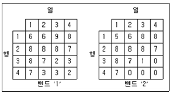
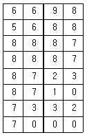
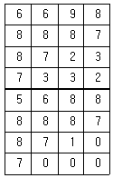
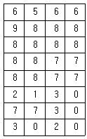
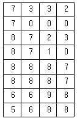
(정답률: 41%)
51. 시차(parallax)에 대한 설명으로 옳은 것은?
- 종시차는 주점기선의 차를 반영한다.
- 종시차는 물체의 수평위치 차를 반영한다.
- 횡시차는 물체의 고저 차를 반영한다.
- 횡시차가 없어야 입체시가 된다.
(정답률: 36%)
52. 사진기 검정자료(calibration data)로부터 직접 얻을 수 없는 정보는?
- 초점거리
- 렌즈의 왜곡량
- 등각점
- 주점
(정답률: 36%)
53. 초점거리 15cm의 사진기로 해발고도 3000m에서 촬영한 산 정상의 사진축척이 1:18000이었다면 이 산 정상의 높이는?
- 300m
- 400m
- 500m
- 600m
(정답률: 43%)
54. 다음 중 능동형센서(SAR)가 장착된 위성은?
- IKONOS-2
- LANDSAT-5
- KOMPSAT-5
- WORLD VIEW-2
(정답률: 49%)
55. 평탄지를 축척 1:30000으로 촬영한 연직 사진이 있다. 카메라의 초점거리가 150mm, 사진의 크기가 23cm×23cm, 종중복도 60%일 때 기선고도비는?
- 0.61
- 0.45
- 0.92
- 0.81
(정답률: 54%)
56. 한쌍의 입체사진에 있어서 사진의 좌우를 바꾸어 놓거나, 색안경의 적색과 청색을 좌우로 바꾸어서 볼 때 생기는 입체시는?
- 역입체시
- 육안입체시
- 여색입체시
- 편광입체시
(정답률: 69%)
57. 촬영고도 3000m에서 찍은 항공사진을 도화기에서 관측한 시차차의 표준오차가 ±36μm이었고, 이 사진의 주점기선장이 72mm이었다면 실제높이에 대한 표준오차는?
- ±0.67m
- ±0.90m
- ±1.50m
- ±1.67m
(정답률: 39%)
58. 촬영고도 3000m, 축척 1:20000의 항공사진에서 주점과 연직점의 거리가 13.12mm이면 사진의 경사각은?
- 3°
- 5°
- 10°
- 15°
(정답률: 43%)
59. 항공라이다 측량시 취득할 수 있는 정보가 아닌 것은?
- Laser 펄스가 반사된 지점에 대한 X, Y, Z 좌표값
- Laser 펄스가 반사된 지점의 반사강도
- 대상지역에 대한 Radar 영상
- 반사된 Laser 펄스의 파형
(정답률: 45%)
60. 2010년에 우리나라에서 개발하여 발사한 천리안위성(COMS)의 임무로 거리가 먼 것은?
- 통신중계
- 해양관측
- 선박감시
- 기상관측
(정답률: 60%)
4과목: 지리정보시스템
61. 도시계획 레이어와 행정구역 레이어를 중첩분석 하여 행정구역별 도시계획과 같은 결과를 얻었을 때 결과 테이블로 옳은 것은?
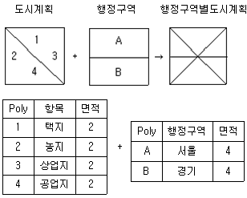
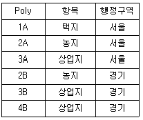
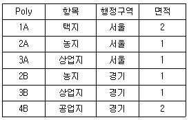
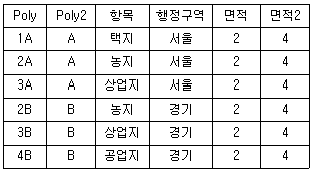
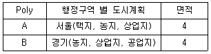
(정답률: 59%)
62. 벡터편집 과정에서 나타나는 오류 유형 중 하나의 선으로 입력되어야 할 곳에서 두 개의 선으로 약간 어긋나게 입력되는 오류는?
- 스파이크(spike)
- 슬리버폴리곤(sliver polygon)
- 오버슈트(over shoot)
- 오버랩핑(over lapping)
(정답률: 63%)
63. 지리정보시스템(GIS)에서 표준화가 필요한 이유로 가장 거리가 먼 것은?
- 서로 다른 기관 간에 데이터 유출의 방지 및 데이터의 보안을 유지하기 위하여
- 데이터의 제작시 사용된 하드웨어(H/W)나 소프트웨어(S/W)에 구애받지 않고 손쉽게 데이터를 사용하기 위하여
- 하나의 기관에서 구축한 데이터를 많은 기관들이 공유하여 사용하기 위하여
- 데이터의 공동 활용을 통하여 데이터의 중복 구축을 방지함으로써 데이터 구축비용을 절약하기 위하여
(정답률: 68%)
64. GIS와 관련된 모든 종류의 공간자료들을 서로 호환이 가능하도록 하기 위해 만들어진 대표적인 교환표준은?
- SDTS
- DWG
- IMG
- SPSS
(정답률: 65%)
65. 지리정보시스템(GIS) 자료를 8bit의 래스터 자료로 구성하려고 하는 경우 8bit로 표현할 수 있는 정보의 수는?
- 64
- 128
- 256
- 512
(정답률: 70%)
66. SQL(Structured Query Language)에 대한 설명으로 옳지 않은 것은?
- 영어와 같은 일반 언어와 구조가 유사하여 배우고 이해하기 용이한 편이다.
- 단순한 질의 기능뿐만 아니라 완전한 데이터 정의 기능과 조작 기능을 갖추고 있다.
- 광범위하게 사용되는 절차적 질의어(procedural query language)이다.
- 컴퓨터 시스템간의 이식성이 용이하다.
(정답률: 45%)
67. 위상 모형을 통하여 얻을 수 있는 공간분석으로 적절하지 않은 것은?
- 중첩 분석
- 인접성 분석
- 네트워크 분석
- 주성분 분석
(정답률: 61%)
68. 다음이 설명하고 있는 것으로 옳은 것은?
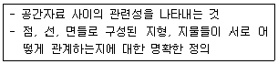
- 계층구조
- 자료구조
- 위상구조
- 벡터구조
(정답률: 63%)
69. 부서 및 응용프로그램 단위 등으로 흩어져 있는 정보들을 하나의 저장창고에 통합, 저장함으로써 자료의 가치와 효율성을 극대화하는 것은?
- 데이터베이스(Database)
- 데이터베이스관리시스템(DBMS)
- 데이터웨어하우스(Data Warehouse)
- 스트리밍기술(Streaming)
(정답률: 52%)
70. GIS DB구축 및 활용이 개인컴퓨팅 환경에 얽매이지 않고 웹(web)을 통해 사회 다수의 이용자에게 제공되는 GIS환경은?
- LIS
- Internet GIS
- GNSS
- Enterprise GIS
(정답률: 58%)
71. 그림은 10m 해상도의 수치표고모형(DEM)의 격자를 나타낸다. 선형보간법에 의한 P점의 높이값은? (단, 격자간격은 10m×10m이다.)
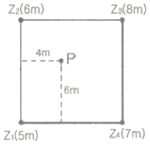
- 6.0m
- 6.2m
- 6.4m
- 6.6m
(정답률: 54%)
72. 수치표고모형(DEM)만을 이용하여 얻을 수 있는 자료들로 짝지어진 것은?
- 표고분석도, 역세권 분석도
- 사면방향도, 경사도에 대한 분석도
- 수계도, 토지피복도
- 가시권에 대한 분석도, 도로망도
(정답률: 71%)
73. 공간분석의 하나인 중첩분석에 해당되지 않는 것은?
- 식생도와 도시계획도를 합하는 과정
- 수치지형도와 하천도를 합하는 과정
- 동일 시기의 종이지도와 수치지도를 합하는 과정
- 서로 다른 시기의 수치지도 레이어를 합하는 과정
(정답률: 53%)
74. 지리정보시스템(GIS) 자료를 위치자료와 속성자료로 구분할 때, 다음 중 속성자료를 취득하는 방법과 가장 거리가 먼 것은?
- GNSS를 이용한 측량
- 원격탐사 데이터 분석
- 지리조사
- 문헌조사
(정답률: 53%)
75. 공간정보 파일 포맷 중에서 벡터 데이터 형식(Vector Data Format)이 아닌 것은?
- geofile.dxf
- geofile.shp
- geofile.ngi
- geofile.tif
(정답률: 60%)
76. 공간정보의 레이어 편집 중 그림과 같이 동일한 데이터를 하나로 합치는 방법은?
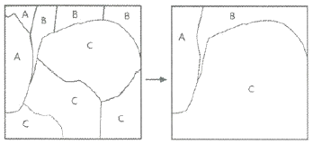
- Dissolve
- Erase
- Clip
- Eliminate
(정답률: 66%)
77. 지적도(parcels)에서 면적(area, m2)이 100을 초과하는 대지의 소유자(owner)를 알려고 할 때, SQL(Structured Query Language) 질의문으로 옳은 것은?
- SELECT owner FROM area GT 100 WHERE parcels
- SELECT area GT 100 FROM owner WHERE parcels
- SELECT owner FROM parcels WHERE area ＞ 100
- SELECT parcels FROM owner WHERE area ＞ 100
(정답률: 65%)
78. 지리정보시스템(GIS)에서 많이 사용되는 관계형 데이터베이스 관리 시스템에 대한 설명으로 틀린 것은?
- 테이블의 구성이 자유롭다.
- 모형 구성이 단순하고 이해가 빠르다.
- 정보를 추출하기 위한 질의의 형태에 제한이 없다.
- 테이블의 수가 상대적으로 적어 저장 용량을 적게 차지한다.
(정답률: 71%)
79. 위성영상의 해상도에 대한 설명으로 틀린 것은?
- 분광해상도는 스펙트럼 내에서 센서가 반응하는 특정 전자기 파장대의 수와 이 파장대의 크기를 말한다.
- 공간해상도는 하나의 화소가 나타내는 지표면의 넓이를 나타낸다.
- 주기해상도는 동일 지역에 대한 영상을 얼마나 자주 얻을 수 있는가를 나타낸다.
- 방사해상도는 동일 영상 내의 축척을 얼마나 고르게 나타낼 수 있는가를 나타낸다.
(정답률: 58%)
80. 다음 중 지리정보자료와 거리가 먼 것은?
- 지역별 연평균 강우량 정보
- 행정구역별 인구밀도 정보
- 대상지역의 경사도분포 정보
- 직업군별 평균소득 정보
(정답률: 74%)
5과목: 측량학
81. 광파거리측량기에 대한 설명으로서 옳지 않은 것은?
- 광파거리측량기는 줄자에 비하여 기복이 많은 지역의 거리관측에 유리하다.
- 광파거리측량기의 변조주파수의 변화에 따라 생기는 오차는 관측거리에 비례한다.
- 광파거리측량기의 변조파장이 긴 것이 짧은 것에 비하여 정확도가 높다.
- 광파거리측량기의 정수는 비교기선장에서 비교측량하여 구한다.
(정답률: 57%)
82. 삼각망을 구성하는 데 있어서 내각을 작게 하는 것이 좋지 않은 이유를 가장 잘 설명한 것은?
- 한 삼각형에 있어서 작은 각이 있으면 반드시 다른 각 중에서 큰 각이 있기 때문이다.
- 경도, 위도 또는 좌표계산이 불편하기 때문이다.
- 한 기지변으로부터 타변을 sine 법칙으로 구할 때 오차가 많이 생기기 때문이다.
- 측각하기가 불편하기 때문이다.
(정답률: 62%)
83. 토털스테이션이 많이 활용되는 측량 작업과 가장 거리가 먼 것은?
- 종ㆍ횡단 측량이 필요한 노선 측량
- 고정밀도를 요하는 정밀 측량 및 지각변동관측 측량
- 지형 측량과 같이 많은 점의 평면 및 표고좌표가 필요한 측량
- 거리와 각을 동시에 관측하면 작업효율이 높아지는 트래버스 측량
(정답률: 57%)
84. 측점의 수가 6개인 폐합트래버스의 편각을 각각 관측하였을 때 편각의 총합은? (단, 각 관측은 동일한 방향으로 측정)
- 360°
- 720°
- 1080°
- 1440°
(정답률: 37%)
85. 주로 지역 내의 지성선 위치 및 그 위 각 점의 표고를 실측 도시하여 이것을 기초로 현지에서 지형을 관찰하면서 적당하게 등고선을 삽입하는 방법으로 비교적 소축척 산지에 이용되는 방법은?
- 횡단점법
- 직접법
- 좌표점법
- 종단점법
(정답률: 35%)
86. 동일한 정밀도로 각을 관측하여 α=39° 19′ 40″, β=52° 25′ 29″, γ=91° 45′ 00″를 얻었다면 γ의 최확값은?
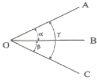
- 91° 44′ 57″
- 91° 44′ 59″
- 91° 45′ 01″
- 91° 45′ 03″
(정답률: 46%)
87. 그림은 삼각측량에서의 좌표계산을 위한 것이다. A점의 좌표(XA, YA)를 알고 C점의 좌표를 계산하는 식으로 옳은 것은? (단, T는 방향각이고 S는 변장임)
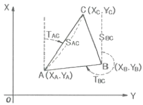
- Xc = XA + SACㆍcosTAC
Yc = YA + SACㆍsinTAC - Xc = XA + SACㆍsinTAC
Yc = YA + SACㆍcosTAC - Xc = XA - SACㆍcosTAC
Yc = YA - SACㆍsinTAC - Xc = YA + SACㆍcosTAC
Yc = XA + SACㆍsinTAC
(정답률: 46%)
88. 트래버스측량의 결과가 표와 같을 때, 폐합오차는?
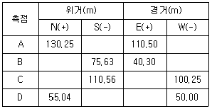
- 1.⑤m
- 1.15m
- 1.75m
- 1.95m
(정답률: 46%)
89. 노선의 전체길이가 약 5km인 폐합 트래버스 측량을 실시한 결과 정확도가 1/7000 이었을 때 폐합오차는?
- 51.4cm
- 50.5cm
- 71.4cm
- 70.4cm
(정답률: 52%)
90. 축척 1:25000 지형도 상에서 P점으로부터의 도상거리가 인접한 190m 등고선과는 6.3mm, 200m 등고선과는 3.7mm를 갖는다면 P점의 표고는?
- 196.3m
- 193.7m
- 193.6m
- 197.3m
(정답률: 41%)
91. 그림과 같이 수준측량을 실시한 결과 A의 표척눈금이 3.560m, A의 표고 HA=100.00m 이고, B의 표고 HB=101.110m이었다. B점의 표척 눈금은?
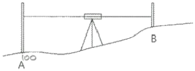
- 1.245m
- 2.450m
- 3.000m
- 3.004m
(정답률: 57%)
92. 수준측량에서 야장기입법에 대한 설명으로 옳지 않은 것은?
- 고차식 야장기입법은 수준측량 노선의 총 연장이나 작업 경로에 관계없이 단순히 두 점, 즉 출발점과 끝점의 표고차만 알고자 할 때에 사용하는 야장기입법이다.
- 승강식 야장기입법은 두 점에 세운 수준척 눈금의 읽음값의 차가 두 점의 표고차가 된다는 원리를 이용한 야장기입법이다.
- 기고식 야장기입법은 어떤 한 점의 표고에 그 점의 후시를 더하면 기계고를 얻을 수 있고 기계고에서 표고를 알고자 하는 점의 전시를 빼면 그 점의 표고를 얻게 되는 방법이다.
- 기고식은 중간점이 많을 때는 계산이 복잡해지는 단점이 있다.
(정답률: 38%)
93. 갑, 을 두 사람이 동일조건하에 AB 거리를 측정하여 다음 결과를 얻었을 때 최확값은?
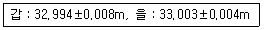
- 32.997m
- 33.001m
- 33.0⑤m
- 33.009m
(정답률: 36%)
94. 어떤 길이를 10회 관측한 결과 평균제곱오차(중등오차)가 ±8.0cm이었다. 같은 방법으로 관측하여 평균제곱오차를 ±4.0cm로 하기 위해서는 몇 회 관측하여야 하는가?
- 20회
- 40회
- 60회
- 80회
(정답률: 59%)
95. 지도도식규칙에 따라 지도의 외도곽 바깥쪽에 표시되는 것이 아닌 것은?
- 편집년도
- 도엽번호
- 행전구역경계
- 인쇄연도 및 축척
(정답률: 57%)
96. 기본측량 성과의 고시에 포함되어야 하는 사항이 아닌 것은?
- 측량의 정확도
- 설치한 측량기준점의 수
- 책임측량기술자
- 측량성과의 보관장소
(정답률: 39%)
97. 측량업 등록을 하지 않고 측량업을 한 자에 대한 벌칙 기준은?
- 3년 이하의 징역 또는 3천만원 이하의 벌금
- 2년 이하의 징역 또는 2천만원 이하의 벌금
- 1년 이하의 징역 또는 1천만원 이하의 벌금
- 300만 원 이하의 과태료
(정답률: 48%)
98. 각 좌표계에서의 직각좌표는 TㆍM(Transverse Mercator, 횡단 머케이터) 방법으로 표시한다. 이 좌표의 조건으로 틀린 것은?
- X축은 좌표계 원점의 자북선에 일치한다.
- 진북방향을 정(+)으로 표시한다.
- Y축은 X축에 직교하는 축으로 진동방향을 정(+)으로 한다.
- 직각좌표계의 원점 좌표는 (X=0, Y=0)으로 한다.
(정답률: 40%)
99. 법률에 따라 성능검사를 받아야 하는 측량기기에 해당되지 않는 것은?
- 거리측정기
- 레벨
- 금속관로 탐지기
- 평판
(정답률: 59%)
100. 기본측량의 성과 중 지도를 국토교통부장관의 허가 없이 국외로 반출할 수 있는 경우에 해당되지 않는 것은?
- 대한민국 정부와 외국정부간에 체결된 협정 또는 합의에 의하여 상호 교환하는 경우
- 5만분의 1 이상의 축척으로 제작된 지도를 국외로 반출하는 경우
- 정부를 대표하여 외국 정부와 교섭하거나 국제회의 또는 국제기구에 참석하는 자가 자료로 사용하기 위하여 반출하는 경우
- 관광객의 유치와 관광시설의 선전을 목적으로 제작된 지도를 국외로 반출하는 경우
(정답률: 67%)